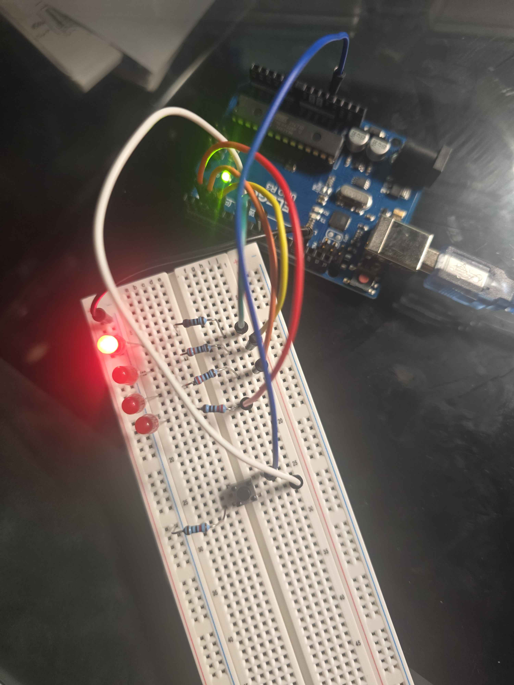
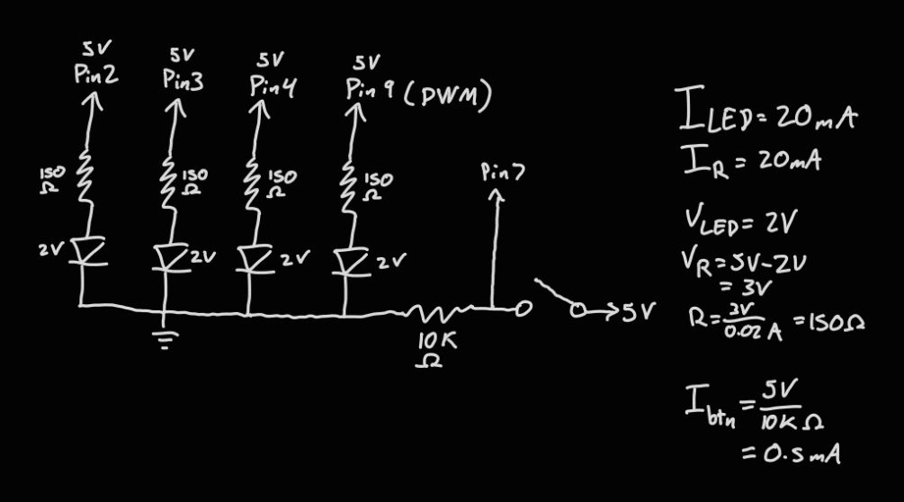
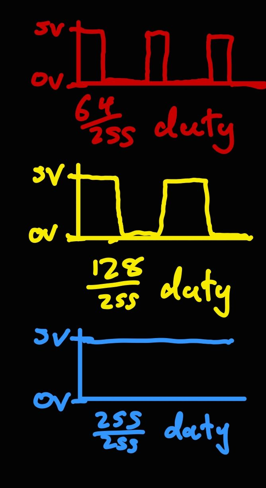

Code Chunk
// Sets pin 9 to "fadePin"
const int fadePin = 9;
// Sets pin 7 to "btnPin"
const int btnPin = 7;
void setup() {
// Sets fadePin to output
pinMode(fadePin, OUTPUT);
// Sets btnPin to input
pinMode(btnPin, INPUT);
//sets pin 2 to output
pinMode(2, OUTPUT);
// sets pin 3 to output
pinMode(3, OUTPUT);
// sets pin 4 to output
pinMode(4, OUTPUT);
}
void loop() {
// reads btnPin if it's pressed
if (digitalRead(btnPin) == HIGH) {
// If the button is pressed, it runs a for loops that loops 3 times
for (int i = 0; i < 3; i++) {
// turns on pin/led 1
digitalWrite(2, HIGH);
// delay for 150 ms
delay(150);
// turns on pin/led 2
digitalWrite(3, HIGH);
// turns on pin/led 1
digitalWrite(2, LOW);
// delay for 150 ms
delay(150);
// turns on pin/led 3
digitalWrite(4, HIGH);
// turns off pin/led 2
digitalWrite(3, LOW);
// delay for 150 ms
delay(150);
// turns off pin/led 3
digitalWrite(4, LOW);
}
// if the button isn't pressed, then it runs the following code
} else {
// creates an integer object "b" and if it's equal to 0
// then it will repeat and increment by 5 until it reaches 255
for (int b = 0; b <= 255; b += 5) {
// turns fadePin on at "b" analog value
analogWrite(fadePin, b);
// delay 10ms
delay(10);
}
// creates an integer object "b" and if it's equal to 255
// then it will repeat and increment by -5 until it reaches 255
for (int b = 255; b >= 0; b -= 5) {
// turns fadePin on at "b" analog value
analogWrite(fadePin, b);
// delay 10ms
delay(10);
}
}
}
Questions:
1: Draw a chart where the X axis is time and the Y axis is voltage.
Draw 3 lines representing the voltage across an LED with analogWrite(led, 64),
analogWrite(led, 128), and analogWrite(led, 255).

2: If all your LEDs were on simultaneously,
what would the total current draw be? Is this above or below the
total Arduino current draw limits? If all your LEDs were on,
how long would your circuit run if powered by a 1200 mAh battery?
Based on my calculations, each LED should draw 20 mA of current each. with
all 4 LEDs on simultaneously, it would have a total current draw of 80 mA.
This is right at the per pin limit of 20mA on the arduino, as well as below the 150 mA chip total.
If all of the LEDs were on and the circuit runs on a 1200 mAh battery, it would run for 1200/80 = 15 hours.
3: Measure and record the actual voltage across one of your LEDs when it's on.
How does this compare to the theoretical forward voltage for your LED color?
I measured 1.98 V across the LED while it was lit, which isn't too far off of the
theoretical forward voltage of a red LED (2V). This is a difference of 0.02V which is about 1%.
This difference is within normal variation for the LED and multimeter accuracy.
4: Did you use AI tools in completing this assignment?
If yes, please provide details on how/when, as well as a brief reflection.
If no, you can either leave this question blank, or provide other information
if you'd like.
no.